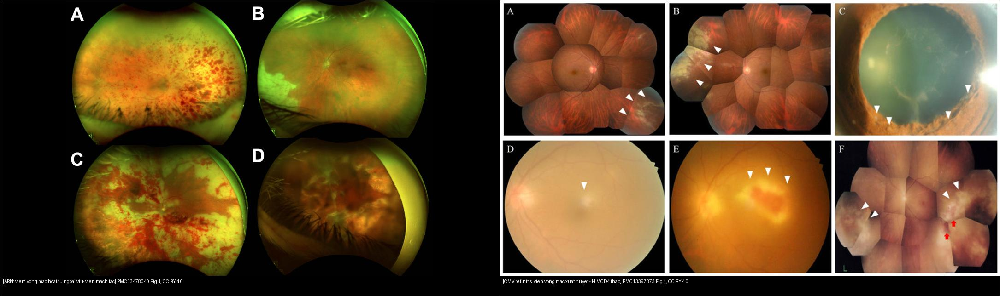
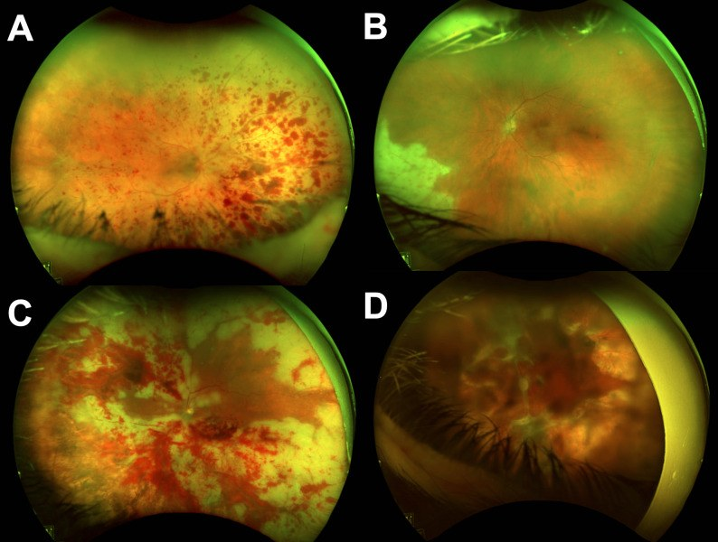
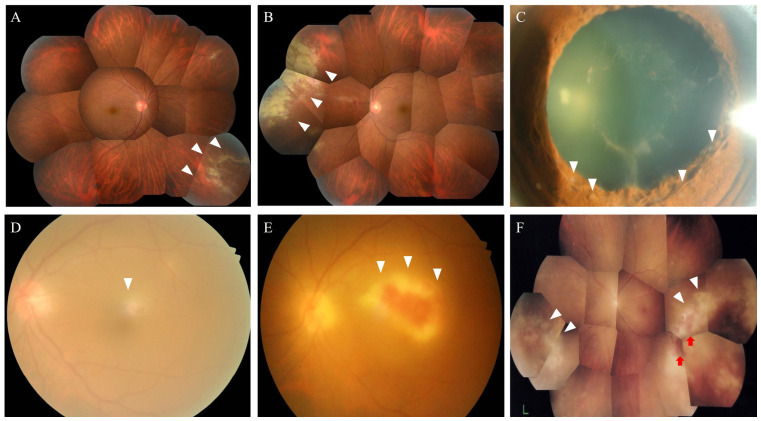
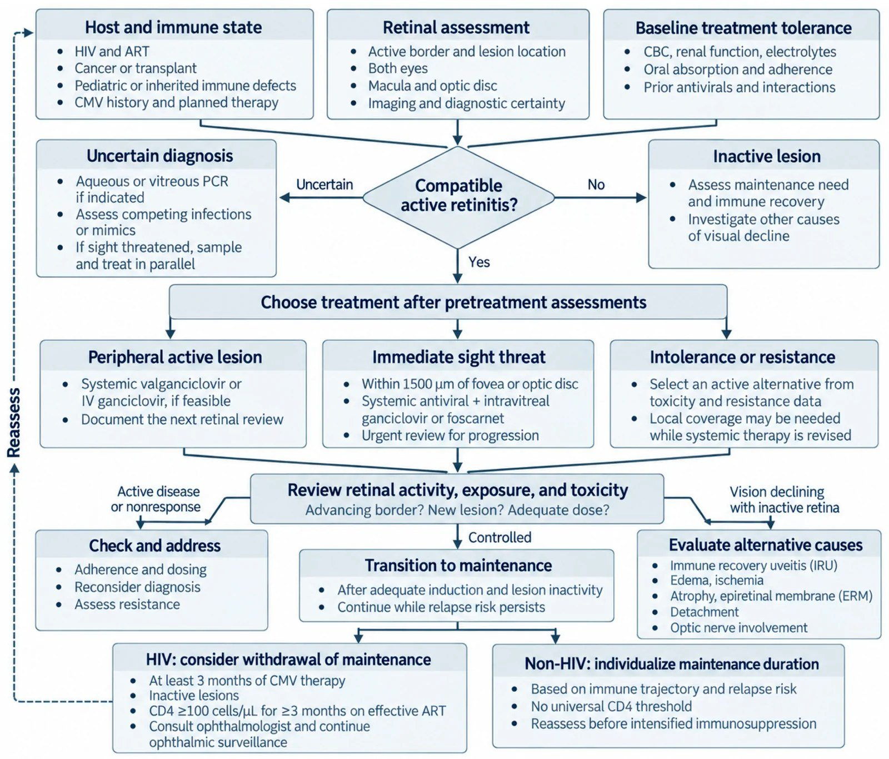

452 — Hoại tử võng mạc cấp (ARN) & viêm võng mạc CMV: cấp cứu mù nhanh / Acute retinal necrosis & CMV retinitis
Tags: pattern:hoai-tu-vong-mac vung:vong-mac protocol:PCR-dich-thuy protocol:widefield
Mức chắc chắn (certainty): tổng hợp y văn (literature synthesis) — nhóm tự biên từ 4 nghiên cứu mở (JOII 2025 & 2026 CC BY 4.0 + IDR 2026 CC BY 4.0 + JCM 2026 CC BY 4.0), chưa gắn ca nguyên văn đơn lẻ.
1. Tổng quan — mức miễn dịch quyết định "chân dung" viêm hoại tử
- Viêm hoại tử võng mạc (necrotizing retinitis) do virus herpes gây ly giải tế bào toàn chiều dày võng mạc → mảng trắng đục (retinal whitening) + tắc mạch võng mạc → xuất huyết. Cùng họ virus, khác mức miễn dịch → 3 chân dung khác nhau (ARN, CMV, PORN); đây là chìa khóa phân biệt, không chỉ hình thái.
- TẠI SAO miễn dịch quyết định hình thái: đề kháng virus chủ yếu do tế bào T CD4/CD8. Khi còn miễn dịch tương đối (ARN) → phản ứng viêm mạnh: tiền phòng có tế bào, viêm dịch kính nổi bật (vitritis), viêm tắc mạch (occlusive vasculitis). Khi suy giảm T nặng (CMV, CD4 thấp) → viêm rất ít nhưng virus lan không cản trở: tổn thương hạt/xuất huyết, ít viêm → dễ bỏ sót.
- Số nằm lòng (miễn dịch ↔ chân dung): CMV retinitis nguy cơ cao nhất khi CD4 < 50 tế bào/µL (loạt mới: CD4 46–141); ARN gặp cả người miễn dịch bình thường. Tác nhân ARN: VZV ~56%, HSV ~40% (huyết thanh dịch tiền phòng/aqueous, PMC13478040); PCR dịch nội nhãn dương 96% ở loạt Canada và 22/28 mắt ở loạt Saudi (PMC12214190).
- Biến chứng quyết định thị lực — bong võng mạc (RRD): 44% (loạt Canada; trung bình 105 ngày, khoảng 14–180 ngày) và 56,3% (loạt Saudi); nguy cơ RRD tăng khi viêm dịch kính nặng (OR 3,8), viêm lan tỏa/đa ổ, diện tổn thương lớn. Nửa số mắt kết cục thị lực < 20/200.
- Điều trị nền tảng: ARN → acyclovir IV 10 mg/kg mỗi 8 giờ; CMV → valganciclovir 900 mg × 2/ngày (hoặc ganciclovir IV 5 mg/kg mỗi 12 giờ); cả hai phối hợp tiêm nội nhãn + kiểm soát miễn dịch; corticoid chỉ sau khi đã khống chế virus.
2. Mẫu hình + chẩn đoán phân biệt theo mức miễn dịch (gamut)
- Miễn dịch tương đối tốt + viêm nặng: ARN (acute retinal necrosis) — VZV>HSV, 1 bên (1/3 hai bên), đau, viêm dịch kính nổi, viêm tắc mạch, hoại tử ngoại vi lan về phía sau.
- Suy giảm miễn dịch nặng (HIV CD4 thấp, ghép tạng): CMV retinitis — "bánh pizza"/hạt–xuất huyết, tổn thương lang theo mạch ("brushfire"), võng mạc lành giữa các tổn thương; tiền phòng/vitritis rất ít.
- Suy giảm miễn dịch cực nặng: PORN (progressive outer retinal necrosis) — VZV, nhiều ổ đục sâu (deep retinal opacification) ở cực sau, "bùn nứt/other world", viêm gần như không có, tiến triển tính bằng ngày, tiên lượng rất xấu.
- Bắt chước (masquerade): lao (giả ARN — cần loại trừ, PMC13474008), giang mai (viêm võng mạc hoại tử + ban), toxoplasmosis (ổ đơn độc sát sẹo cũ + viêm dịch kính), lymphoma nội nhãn, bệnh Behçet, frosted branch angiitis (mạch bọc sương, gặp trong CMV/HIV, SLE).
3. Bảng so sánh phân biệt (ma trận đối chiếu)
| Thực thể (entity) | Hình ảnh điển hình | Chốt vào (rule-in) | Chốt loại (rule-out) | Gợi ý xác nhận |
|---|---|---|---|---|
| ARN (VZV/HSV) | Hoại tử ngoại vi lan về sau + viêm tắc mạch + viêm dịch kính nổi + tiền phòng có tế bào; đau | Viêm nặng (vitritis) + viêm tắc mạch + 1 bên ở người tương đối khỏe | Viêm rất ít + CD4 thấp → CMV; nhiều ổ sâu → PORN | PCR dịch tiền phòng (VZV/HSV); điều trị acyclovir IV |
| CMV retinitis | Hạt–xuất huyết ("bánh pizza"), lang theo mạch, ít viêm; hay ở cực sau | HIV CD4 < 50 + ít viêm + tổn thương hạt/xuất huyết | Viêm nặng + người khỏe → ARN | PCR CMV dịch nội nhãn; valganciclovir |
| PORN (VZV) | Nhiều ổ đục sâu cực sau, ranh giới rõ, tiến triển nhanh, không viêm | Suy giảm miễn dịch nặng + tổn thương sâu đa ổ + lan nhanh trong ngày | Hoại tử toàn chiều dày ngoại vi → ARN | PCR VZV; tiên lượng rất xấu |
| Lao giả ARN | Mảng trắng + viêm mạch, có thể giống ARN | Bối cảnh lao + tổn thương không lan điển hình + PCR virus âm | PCR virus dương → ARN/CMV | PCR virus âm + IGRA/phản ứng lao; theo dõi điều trị lao |
| Toxoplasmosis | Ổ vàng–trắng sát sẹo hắc mạc cũ + viêm dịch kính | Ổ đơn độc cạnh sẹo cũ (satellite) + viêm dịch kính | Hoại tử ngoại vi lan/dải → ARN | Lâm sàng ± PCR; pyrimethamine–sulfadiazine |

Trái: 4 mắt ARN, hình chụp góc rộng — mảng hoại tử trắng lan + xuất huyết, viêm mạch tắc (PMC13478040 Fig. 1, CC BY 4.0). Phải: montage CMV retinitis ở HIV mới chẩn đoán — vùng hoại tử trắng kèm xuất huyết (tam giác trắng), tổn thương quanh mạch (PMC13397873 Fig. 1, CC BY 4.0). Ảnh ghép letterbox.Quiz composite: che 2 nhãn, hỏi dấu lâm sàng nào (viêm dịch kính) giúp phân bên trái/bên phải?
Bấm để hiện đáp án
- Trái = ARN — viêm dịch kính nổi bật + viêm tắc mạch + hoại tử ngoại vi lan về sau, người tương đối khỏe → acyclovir IV 10 mg/kg q8h + tiêm nội nhãn.
- Phải = CMV retinitis — tổn thương hạt/xuất huyết, ít viêm, ở bệnh nhân HIV CD4 thấp → valganciclovir + điều trị HIV (ART).
- Chốt phân biệt: mức viêm (vitritis) tỷ lệ nghịch với mức suy giảm miễn dịch — cùng virus herpes nhưng chân dung ngược nhau.
Vì sao "bánh pizza" gợi CMV, còn "hoại tử ngoại vi lan" gợi ARN
- CMV ("pizza pie"/"kool-aid"): virus theo mạch máu võng mạc lan dần → hoại tử + xuất huyết dọc mạch, võng mạc giữa các tổn thương còn lành; ít viêm vì thiếu tế bào T.
- ARN: tổn thương liên tục, từ ngoại vi lan về phía sau + viêm tắc mạch rõ + viêm dịch kính — do miễn dịch còn phản ứng mạnh.
- Cạm bẫy: ARN 2 bên khoảng 1/3 — mắt còn lại bình thường lúc khám vẫn phải theo dõi sát (tổn thương có thể xuất hiện vài tuần sau).
4. Protocol chụp + tiêu chuẩn chẩn đoán ARN + xử trí
- Khám + hình ảnh: soi đáy mắt giãn đồng tử + chụp góc rộng (widefield) theo dõi diện tổn thương; OCT hoàng điểm (phù, dịch, dính dịch kính–võng mạc); siêu âm B khi không thấy đáy mắt (bài 411).
- Tiêu chuẩn ARN (chuẩn hóa 2021): cần đủ 4 — (1) viêm tiền phòng, (2) hoại tử võng mạc ngoại vi, (3) viêm tắc mạch (động mạch), (4) viêm dịch kính nổi bật; xác nhận bằng PCR dich tiền phòng/dịch kính (VZV, HSV-1/2, CMV, EBV).
- PCR là chốt tác nhân: dịch tiền phòng an toàn + đủ (dương ~96% trong loạt ARN); âm không loại trừ (điều trị theo lâm sàng); phân biệt ARN/CMV/PORN để chọn thuốc.
- Điều trị ARN: acyclovir IV 10 mg/kg mỗi 8 giờ (7–10 ngày) → valacyclovir uống duy trì (≥ 3 tháng), tiêm nội nhãn foscarnet/ganciclovir (chú ý độc thận), corticoid sau khi đã có kháng virus; laser chắn (barrier) dự phòng RRD ở vùng hoại tử + cắt dịch kính khi RRD/đục dịch kính.
- Điều trị CMV: valganciclovir 900 mg × 2/ngày (cảm ứng) hoặc ganciclovir IV 5 mg/kg mỗi 12 giờ; tiêm nội nhãn khi đe dọa hoàng điểm; khởi động ART cho HIV (đề phòng viêm mắt hồi phục miễn dịch — IRU); theo dõi công thức máu (độc tủy).
- Theo dõi: soi đáy mắt + chụp góc rộng mỗi 1–2 tuần đến khi tổn thương ngừng lan và bờ bắt đầu co; cảnh giác RRD muộn (đến 180 ngày).
flowchart TD
A[Viem hoai tu vong mac nghi herpes] --> B{Muc mien dich}
B -->|Tuong doi khoe + viem nang| C[ARN: VZV/HSV - acyclovir IV 10 mg/kg q8h + tieu noi nhan]
B -->|HIV CD4 < 50 + it viem| D[CMV: hat/xuat huyet - valganciclovir 900 mg x2 + ART]
B -->|Suy giam nang + nhieu o sau| E[PORN: VZV - tien luong xau]
C --> F[PCR dich tien phong/dich kinh]
D --> F
C --> G[Laser chan + cat dich kinh khi RRD - nguy co 44-56%]
G --> H[Theo doi widefield 1-2 tuan + canh giac RRD muon 180 ngay]
5. Biến thể bình thường và cạm bẫy
- Masquerade quan trọng nhất — lao và giang mai: bệnh cảnh giống ARN nhưng PCR virus âm — luôn gửi lao/giang mai, tránh dùng corticoid đơn thuần (làm bùng phát).
- Corticoid trước kháng virus = tai họa: làm hoại tử lan nhanh — chỉ dùng sau khi đã khống chế virus.
- Viêm dịch kính ít không loại được CMV, cũng không loại ARN sớm — đọc theo toàn cảnh miễn dịch + tiến triển.
- RRD muộn: ARN có thể bong nhiều tháng sau khi viêm đã "lặng" (trung bình 105 ngày) — giải thích cho bệnh nhân + hẹn tái khám dài hạn.
- IRU (viêm mắt hồi phục miễn dịch): sau khi ART làm CD4 hồi phục, viêm tăng lên tưởng như xấu đi — nhận biết để không tăng nhầm thuốc; theo dõi OCT/đáy mắt.
- Giữ võng mạc giữa các tổn thương trong CMV dễ khiến đánh giá thấp diện tổn thương — dùng chụp góc rộng thay vì soi 1 vùng.
6. Tự lượng giá — Blind Quiz
Ca 1 — Bệnh nhân lao/khỏe mạnh, đau mắt, viêm dịch kính nổi, đáy mắt hoại tử trắng lan từ ngoại vi. Hình góc rộng:

- Hỏi: mẫu hình tổn thương? Dấu lâm sàng nào chốt ARN? Xử trí + nguy cơ lớn nhất?
Bấm để hiện đáp án (findings + chẩn đoán)
- Dấu hiệu (findings): mảng trắng đục (hoại tử) ở ngoại vi lan về phía sau + xuất huyết/viêm tắc mạch; kèm viêm tiền phòng + viêm dịch kính nổi bật.
- Chẩn đoán (diagnosis): ARN (acute retinal necrosis) — VZV > HSV; chốt bằng PCR dịch tiền phòng/dịch kính.
- Xử trí: acyclovir IV 10 mg/kg q8h → valacyclovir uống; tiêm nội nhãn; laser chắn; nguy cơ lớn nhất = bong võng mạc (44–56%), có thể muộn đến ~180 ngày.
- Nguồn ảnh: JOII 2026 (PMC13478040) Fig. 1, CC BY 4.0.
Ca 2 — Nam trẻ HIV mới chẩn đoán, CD4 60/µL, nhìn mờ nhẹ 1 bên, đáy mắt dưới đây:

- Hỏi: kiểu tổn thương gì? Mức viêm ra sao và vì sao? Điều trị?
Bấm để hiện đáp án (findings + chẩn đoán)
- Dấu hiệu (findings): vùng hoại tử trắng kèm xuất huyết (tam giác trắng), tổn thương quanh mạch, rất ít viêm; mắt có võng mạc lành xen kẽ.
- Chẩn đoán (diagnosis): CMV retinitis trên HIV mới chẩn đoán, suy giảm miễn dịch nặng (CD4 46–141/µL) — PCR CMV dịch nội nhãn dương.
- Điều trị: valganciclovir 900 mg × 2/ngày (hoặc ganciclovir IV 5 mg/kg q12h) + tiêm nội nhãn + khởi động ART; cảnh giác IRU khi CD4 hồi phục và RRD.
- Nguồn ảnh: Infect Dis Rep 2026 (PMC13397873) Fig. 1, CC BY 4.0.
Ca 3 — Sơ đồ tiếp cận viêm võng mạc CMV theo mức miễn dịch. Nhìn hình, kể các nhánh quyết định điều trị:

- Hỏi: yếu tố nào phân tầng nguy cơ? Khi nào cân nhắc tiêm nội nhãn thay vì đường toàn thân?
Bấm để hiện đáp án (findings + chẩn đoán)
- Sơ đồ phân tầng theo tình trạng miễn dịch (CD4), hoạt tính và vị trí tổn thương (đe dọa hoàng điểm), độ chắc chắn chẩn đoán.
- Tiêm nội nhãn khi tổn thương đe dọa hoàng điểm/tức thì hoặc để bổ trợ khi toàn thân chưa đủ nồng độ — chú ý độc thận/toàn thân.
- Chốt: điều trị phải song song với phục hồi miễn dịch (ART); theo dõi IRU sau hồi phục CD4.
- Nguồn ảnh: JCM 2026 (PMC13665908) Fig. 1, CC BY 4.0.
Bài liên quan chéo
- 400 – Tổng quan Mắt
- 446 – Phù hoàng điểm viêm vs DME (viêm nội nhãn — CME do viêm)
- 447 – Hội chứng đốm trắng (viêm võng mạc–hắc mạc; phân biệt theo tiến triển)
- 443 – Võng mạc đái tháo đường (xuất huyết võng mạc — phân biệt theo bối cảnh)
- 449 – Chấn thương mắt & IOFB (viêm nội nhãn sau chấn thương — phân biệt)
- 451 – Bệnh hệ thống ở mắt (HIV, lao, giang mai ảnh hưởng mắt)
Ảnh
452_arn_Fundus_PMC13478040-Fig1-CCBY.jpg— JOII 2026 (PMCID: PMC13478040), CC BY 4.0.452_cmv-hiv_Fundus_PMC13397873-Fig1-CCBY.jpg— Infect Dis Rep 2026 (PMCID: PMC13397873), CC BY 4.0.452_cmv-bench-do_PMC13665908-Fig1-CCBY.jpg,composite_vong-mac_ARN-vs-CMV.jpg— JCM 2026 (PMCID: PMC13665908), CC BY 4.0.- Chi tiết giấy phép từng ảnh trong
images/CREDITS.md. AuntMinnie: chỉ dẫn link, không tải.
Không dùng để chẩn đoán độc lập khi chưa có người hướng dẫn.